专题07 与有理数有关的四大创新题型（举一反三专项训练）
【北师大版2024】
考卷信息：
本套训练卷共40题，含四大类型的创新题型，每种题型各10题. 题型针对性较高，覆盖面广，选题有深度，可加深学生对与有理数有关的阅读理解与新定义的理解！
【题型1 探究进位制】
1．（24-25七年级上·浙江杭州·阶段练习）计算机中常用的16进制是逢16进1的计算制，采用数字0−9和字母A−F共16个计数符号，这些符号与十进制的数对应关系如下表．
16进制 | 0 | 1 | 2 | 3 | 4 | 5 | 6 | 7 | 8 | 9 | A | B | C | D | E | F |
10进制 | 0 | 1 | 2 | 3 | 4 | 5 | 6 | 7 | 8 | 9 | 10 | 11 | 12 | 13 | 14 | 15 |
例如，用十六进制表示：E+D=1B，则C×D=（ ）
A．156 B．19 C．9C D．A6
【答案】C
【分析】本题考查了有理数乘法与加法的应用，理解十六进制与十进制之间的对应关系是解题关键．先根据有理数的乘法法则求出C×D的值，再利用十六进制将结果表示出来即可得．
【详解】解：C×D=12×13=156，
∵ 156=9×16+12，十六进制中的C与十进制中的12对应，
∴数156用十六进制可表示为9C，即C×D=9C，
故选：C．
2．（24-25七年级上·黑龙江哈尔滨·期末）进位制是人们为了记数和运算方便而约定的记数系统．约定逢十进一就是十进制，逢二进一就是二进制，也就是说“逢几进一”就是几进制
十进制数1024=1×103+0×102+2×101+4，记作1024；
八进制数10248=1×83+0×82+2×81+4，记作10248；
五进制数10245=1×53+0×52+2×51+4，记作10245；
二进制数10112=1×23+0×22+1×21+1，记作10112；
二进制数11012转化为十进制数为（ ）
A．12 B．13 C．14 D．15
【答案】B
【分析】本题考查有理数的混合运算．根据二进制转化为十进制的方法，可以计算出二进制数11012对应的十进制数．
【详解】解：11012=1×23+1×22+0×21+1
=8+4+0+1
=13，
故选：B．
3．（24-25七年级上·河南南阳·期末）我们常用的十进制数，如2639=2×103+6×102+3×101+9，我国古代易经一书记载，远古时期，人们通过在绳子上打结来记录数量，如图，一位母亲在如下排列的绳子上打结，并采用七进制（如2513=2×73+5×72+1×71+3），用来记录孩子自出生后的天数，由图可知，孩子自出生后的天数是 天．
【答案】510
【分析】本题考查了有理数乘方的混合运算，解题关键是理解七进制数的表示方法；
根据图中的数学列式计算类比于十进制，可以表示满七进一的数为：千位上的数×70+百位上的数×71+十位上的数×72+个位上的数×73即可解答．
【详解】解：因为，七进制是满七进一，
所以，从右到左依次排列的绳子，分别代表绳结数乘以70，71，72，73的天数，
所以孩子自出生后的天数是：6×70+2×71+3×72+1×73=6+14+147+343=510．
故答案为：510．
4．（24-25七年级上·广东中山·期末）十进制整数转化为二进制整数通常采用除二取余法，即用2连续除十进制数，直到商为0，逆序排列余数即可得到二进制数，简称除二取余法． 同样，十进制数转化为六进制数可用除六取余法．如图是将十进制数13和500转化为二进制数和六进制数的方法，参照该方法将十进制数2000转化为八进制数为 ．
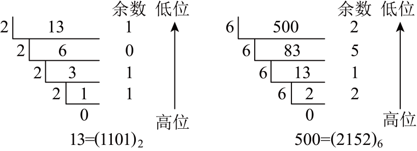
【答案】37208
【分析】本题考查有理数的混合运算．根据题意列式计算后取余数即可．
【详解】解：2000÷8=250……0，
250÷8=31……2，
31÷8=3……7，
3÷8=0……3，
则将十进制数2000转化为．八进制数为37208，
故答案为：37208．
5．（24-25七年级上·北京西城·期末）进位制是人们为了记数和运算方便而约定的记数系统．约定逢三进一就是三进制，用数字0，1，2记数，三进制数可以转换为十进制数．例如，三进制数1212记为12123，由12123=1×33+2×32+1×31+2×30=50，可得12123是十进制数50．
(1)将2013转换为十进制数，结果是________；
(2)对于一个用三进制表示的正整数，有下列两个结论：
①如果这个数的末位数字能被2整除，那么这个数就能被2整除；
②如果这个数的所有数位上的数字之和能被2整除，那么这个数就能被2整除．
从中选出正确结论，并以四位的三进制数abcd3为例，说明该结论正确的道理．
【答案】(1)19
(2)②，理由见解析
【分析】本题考查了有理数的混合运算，能熟练将三进制转化为十进制是解答本题的关键．
（1）根据题意将三进制转化为十进制即可；
（2）根据题意判断出②正确，将四位的三进制数化为十进制的数，经过变形即可验证②．
【详解】（1）解：2013=2×32+1×30=19，
故答案为：19；
（2）解：②是正确结论，理由见下：
abcd3=33a+32b+31c+30d=27a+9b+3c+d=213a+4b+c+a+b+c+d，
∵213a+4b+c能被2整除，
∴如果a+b+c+d能被2整除，那么213a+4b+c+a+b+c+d就能被2整除，即abcd3能被2整除．
6．（24-25七年级上·重庆九龙坡·期末）由本学期学习《进位制的认识与探究》知，进位制是人们为了记数和运算方便而约定的记数系统．约定逢十进一就是十进制，逢二进一就是二进制，也就是说“逢几进一”就是几进制，几进制的基数就是几，以此类推，MM≠10进制就是逢M进一．为与十进制进行区分，我们常把用M进制表示的数a写成aM．M进制的数转化为十进制的数的方法是：若M进制表示的数为1111M，则转换为十进制数的过程为1111M=1×M3+1×M2+1×M1+1×M0（规定当M≠0时，M0=1）．根据你所学知识与学习活动体悟，完成以下问题：
(1)把下列进制表示的数转化为十进制表示的数：10112=_____，10245=_____；
(2)已知二进制数s=11102+10112，请计算并写出s的值（要求写成二进制表示的数）；
(3)请把110012转换成十二进制的数．
【答案】(1)11；,139
(2)25=110012
(3)110012=2112
【分析】本题考查了进位制，解题的关键是读懂题意；
（1）根据1111M=1×M3+1×M2+1×M1+1×M0公式进行转化即可；
（2）根据s=11102+10112=25转化为十进制，再利用公式进行转化即可；
（3）根据110012=25，根据25=2×121+1×120即可求解．
【详解】（1）解：10112=1×23+0×22+1×21+1×20=11，
10245=1×53+0×52+2×51+4×50=139，
故答案为：11,139；
（2）解：s=11102+10112，
=1×23+1×22+1×21+0×20+1×23+0×22+1×21+1×20=25，
∵25=1×24+1×23+0×22+0×21+1×20，
∴25=110012；
（3）解：110012=25=2×121+1×120，
110012=2112．
7．（2025·广东中山·三模）综合与实践：某校七年级课外实践小组进行进位制的认识与探究活动，过程如下：
【进位制的认识】
①进位制是人们为了记数和运算方便而约定的记数系统．约定逢十进一就是十进制，逢二进一就是二进制，即“逢几进一”就是几进制，几进制的基数就是几．
②为了区分不同的进位制，常在数的右下角标明基数，例如，(1011)2就是二进制数1011的简单写法．十进制数一般不标注基数．
③一个数可表示成各数位上的数字与基数的幂的乘积之和的形式．规定当a≠0时，a0=1．如：3721=3×103+7×102+2×101+1×100；(421)7=4×72+2×71+1×70．
【解决问题】
(1)我国古代《易经》一书中记载，远古时期，人们通过在绳子上打结来记录数量，即“结绳计数”．一位母亲在从右到左依次排列的绳子上打结，采取满七进一的方式，用来记录孩子自出生后的天数．例如图1表示的是孩子出生后30天时打绳结的情况（因为：4×71+2=30），那么由图2可知，孩子出生后的天数是________天
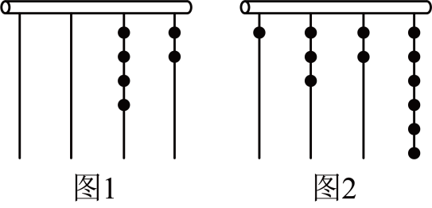
(2)类比十进制加减法计算（结果保留二进制）
例如110112+11012=1010002；
写出110112−11012=________________
(3)小华设计了一个n进制数265，换算成十进制数是145，求n的值（n为正整数）．
【答案】(1)510
(2)11102
(3)n=7
【分析】本题考查有理数的混合运算，一元二次方程的实际应用，熟练掌握进制之间的换算方法，是解题的关键：
（1）根据图形，列出算式进行计算即可；
（2）类比十进制的加减运算，进行计算即可；
（3）根据进制之间的换算关系，列出方程进行求解即可．
【详解】（1）解：1×73+3×72+2×7+6=510（天）；
故答案为：510；
（2）110112−11012=11102；
故答案为：11102
（3）由题意，得：2n2+6n+5=145，
解得：n=7或n=−10（舍去）；
故n=7．
8．（24-25七年级上·重庆忠县·期末）综合与实践：阅读下列材料：
【材料1】“逢几进一”就是几进制，几进制的基数就是几，书写时将进制的基数写在右下角，如1102表示二进制的110，十进制的进制的基数10通常省略不写．各进制数之间可以互相转换，例如：二进制数101102转换成十进制数：101102=1×24+0×23+1×22+1×21+0×20=2210=22，若将十进制数转化成与其相等的n进制数，只需将十进制数除以n取余数，再倒序排列，例如：将十进制数231转换成七进制数，其转换方法如图所示，并记为231=4507．
【材料2】n进制数的四则运算与十进制数的四则运算规则相同，满n进一，数位称呼仍把从右至左的每个数位依次称为个位、十位、百位等，例如：2314+1214=10124，5207−3217=1667．
根据以上学习材料，求解以下问题：
(1)写出3014转换为十进制数和58转换为二进制数的结果；
(2)①在二进制中计算110102+101112；
②在八进制中计算4358×2；
(3)规定：若一个三位的九进制数x和另一个三位八进制数y的百位、十位、个位数字都相同，则称x和y是“同位数”．那么是否存在百位数字为1，十位数字为m，个位数字为n的“同位数”x和y满足x9÷109+y8÷108=2034−30134÷10204×n，若存在，求出m和n的值，若不存在，说明理由．
【答案】(1)3014=49,58=1110102
(2)①110102+101112=1100012；②4358×2=10728
(3)存在m=0且n=6或m=3且n=4或m=6且n=2
【分析】本题主要考查含有乘方的有理数的混合运算，理解题意，掌握有理数乘方运算的法则是解题的关键．
（1）根据材料提示的计算方法计算即可；
（2）①n进制数的四则运算与十进制数的四则运算规则相同，满n进一，由此计算即可；②根据材料提示方法计算即可；
（3）由题意x9=1×92+9m+n，y8=1×82+8m+n，即n=6−2m3，m被3整除，代入计算即可．
【详解】（1）解：3014=3×42+0×41+1×40=48+0+1=49，
58=1×25+1×24+1×23+0×22+1×21+0×20=1110102；
（2）解：①110102+101112=1100012，
②4358×2=10728；
（3）解：若存在m和n满足x9÷109+y8÷108=2034−32214÷10204×n，
由题意x9=1×92+9m+n，y8=1×82+8m+n，
109=9，108=8，2034=35，
30134=199，10204=72，且m，n为不超过7的非负整数，
∴9+m+n9+8+m+n8=35−19972×n，即2m+3n=18，
即n=6−2m3，m被3整除，
即存在m=0且n=6或m=3且n=4或m=6且n=2．
9．（24-25七年级上·辽宁辽阳·期中）【综合与实践】
阅读下列材料：
进位制是人们为了记数和运算方便而约定的记数系统，约定逢十进一就是十进制，逢二进一就是二进制，也就是说，“逢几进一"就是几进制，几进制的基数就是几．为了区分不同的进位制，常在数的右下角标明基数．例如： (1101)₂就是二进制数1101的简单写法，十进制数一般不标注基数，abcn，表示这个n进制数从右起，第一位上的数字为c，第二位上的数字为 b，第三位上的数字为a．一个数可以表示成各数位上的数字与基数的幂的乘积之和的形式．例如十进制数5678=5×103+6×102+7×101+8×100（当a≠0时，a0=1）．同理，二进制数(1101)2转换为十进制为：123+12²+021+120=13．一个十进制数转换为n进制数时，把十进制数表示成0，1，2，…，n−1与基数n的幂的乘积之和的形式．例如，将十进制数46转换为三进制数，因为27<46<81，即33<46<34，则46=133+23²+031+130，所以46转换为三进制数为12103，根据上述材料，解答下列问题．
(1)①把二进制数10112转换为十进制数；
②把十进制数 29转换为二进制数．
(2)把十进制数63转换为五进制数；
(3)若一个三进制数转换为十进制数为m，一个四进制数转换为十进制数为n，当m+n=99时，称这个三进制数与这个四进制数互为“久久数”，试判断(1210)3，与(303)4，是否互为“久久数”，并说明理由．
【答案】(1)①11；②111012
(2)2235
(3)是，理由见解析
【分析】本题主要考查了含乘方的有理数混合运算．
（1）①根据题干二进制数转换为十进制数的方法计算即可．②根据题干十进制数转换为二进制数的方法计算即可．
（2）仿照题干的转化方法把二进制数转换为五进制数即可．
（3）根据“久久数”的定义判断即可．
【详解】（1）解：①(1011)2转换为十进制数为1×23+0×22+1×21+1×20=8+0+2+1=11；
②因为16<29<32，即24<29<25，29=1×24+1×23+1×22+0×21+1×20，
所以29转换为二进制数为(11101)2；
（2）解：因为25<63<125，即52<63<53，63=2×52+2×51+3×50，
所以63转换为五进制数为(223)5；
（3）解：(1210)3与(303)4互为“久久数”，
因为(1210)3转换为十进制数为1×33+2×32+1×31+0×30=48；
(303)4转换为十进制数为3×42+0×41+3×40=51，
48+51=99，
所以(1210)3与(303)4互为“久久数”．
10．（2025·广西南宁·二模）综合实践
问题背景 | 某校编程社团为每位考生的准考证号设计二维码．二维码的图案由一系列黑白相间的方块（黑色代表1，白色代表0）组成，形成一串二进制序列，用于存储各种类型的数据． |
查阅资料一 | 十进制，即“逢十进一”，使用0~9十个数字记数，基数为10（基数10常省略不写）．例如，十进制数3925表示3个千，9个百，2个十，5个一的和，可得式子：3925=3×103+9×102+2×101+5×100（规定：当a≠0时，a0=1），可见，一个数可以表示成各数位上的数字与基数的幂的乘积之和的形式． 二进制，即“逢二进一”，各数位上的数字只有0和1，基数为2．例如，二进制数10100简记为101002（角标2为基数，除十进制外，基数不能省略），可利用上述方法将其转化为十进制数：101002=1×24+0×23+1×22+0×21+0×20=20． |
查阅资料二 | 根据二进制数“逢二进一”的原则，可以用2连续去除十进制数，直到商为0为止，然后逆序取余数，得到二进制数．例如： 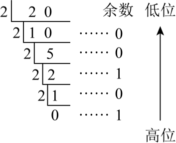 可得：20=101002上述方法可以推广为把十进制数转换为k进制的第法（除k取余法） |
制作二维码 | 图1是小南同学的二维码简易编码和制作说明．小南同学的准考证号是0207181124，其中“02”表示性别男，转化成二进制数为10，对应二维码第一行的五个方格从左到右分别为：白、白、白、黑、白；“07”表示年级为七年级，转化成二进制数为111，对应二维码第二行的五个方格从左到右分别为：白、白、黑、黑、黑：“18”表示班级为18班，转化成二进制数为10010，对应二维码第三行的五个方格从左到右分别为：黑、白、白、黑、白；“11”‘表示考场号为11，转化成二进制数为1011，对应二维码第四行的五个方格从左到右分别为：白、黑、白、黑、黑；“24”表示座位号为24，转化成二进制数为11000，对应二维码第五行的五个方格从左到右分别为：黑、黑、白、白、白． 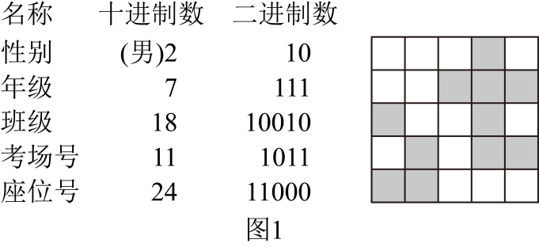 图2是未完成的小宁同学准考证号的二维码．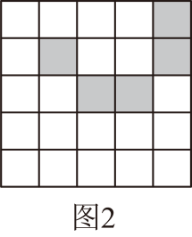 |
请完成下列问题：
【图形感知】（1）根据图1的制作示意图，把小宁同学的考场号二进制数10101在图2中填涂出来；
【转化计算】（2）根据图2的二维码图形，求小宁同学所在的年级和班级；
【实践操作】（3）已知小宁的准考证座位号是13号，请先转化计算，再完善二维码制作．
【答案】（1）见解析；（2）九年级六班；（3）13=11012，二维码见解析
【分析】本题主要考查了有理数的混合运算，理解题目的意思是解题的关键．
（1）根据题意即可填涂出来；
（2）根据题意把二进制转化为十进制数，进行有理数运算即可得到答案；
（3）根据题意把十进制转化为二进制数的方法即可求解．
【详解】解：（1）考场号二进制数10101，对应二维码的五个方格从左到右分别为：黑、白、黑、白、黑，填涂如下：
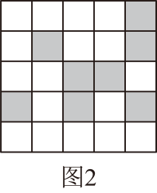
（2）根据图2的二维码图形，小张同学所在的年级：10012=1×23+0×22+0×21+1×20=9，即为九年级；
班级：1102=1×22+1×21+0×20=6，即为六班；
（3）方法一：13=1×23+1×22+0×21+1×20=11012，
方法二：则13=11012，
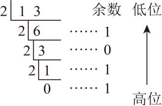
补全图：
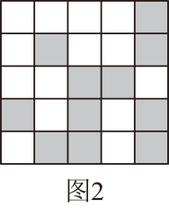
【题型2 新定义】
11．（24-25六年级上·山东淄博·期末）定义新运算：a∗b=1a−1b，a⊗b=1ab（右边的运算为平常的加、减、乘、除）．
例如∶3∗7=13−17=421，3⊗7=13×7=121．
若a⊗b=a∗b，则称有理数a，b为“隔一数对”．
例如∶2∗3=12−13=16，2⊗3=12×3=16，即2⊗3=2∗3，所以2，3就是一对“隔一数对”．
请同学们解答下列问题：
(1)−1，1是“隔一数对”吗？请说明理由；
(2)已知两个连续的非零整数都是“隔一数对”，计算：
1⊗2+2⊗3+3⊗4+4⊗5+⋅⋅⋅+2023⊗2024．
【答案】(1)不是“隔一数对”
(2)20232024
【分析】本题考查了有理数的混合运算、数字的变化规律等知识点，理解“隔一数对”的定义并掌握有理数混合运算法则是解题关键．
（1）根据“隔一数对”的新定义进行计算判断即可；
（2）先根据新定义计算再根据有理数加减运算即可．
【详解】（1）解：由题意可得∶−1⊗1=1−1×1=−1，−1∗1=1−1−11=−2，
∴−1⊗1≠−1∗1，
∴不是“隔一数对”．
（2）解：由题意可得∶
1⊗2+2⊗3+3⊗4+4⊗5+⋅⋅⋅+2023⊗2024
=1∗2+2∗3+3∗4+4∗5+⋅⋅⋅+2023∗2024
=11−12+12−13+13−14+⋅⋅⋅+12023−12024
=1−12024
=20232024．
12．（24-25七年级上·河南郑州·期中）若定义一种新的运算“※”，规定有理数a※b=a2−2ab，如3※4=32−2×3×4=−15．
(1)求6※−8的值；
(2)求−7※5※9的值．
【答案】(1)132
(2)−861
【分析】（1）根据定义运算法则解答即可；
（2）根据定义运算法则解答即可．
本题考查了新定义运算，熟练掌握有理数的乘方，加减混合运算是解题的关键．
【详解】（1）解：6※−8=62−2×6×−8=132．
（2）解：−7※5※9=−7※52−2×5×9
=−7※−65
=−72−2×−65×−7
=49−910
=−861．
13．（2025·海南三亚·二模）阅读与思考：请阅读下列材料，并完成下列问题．
【等比数列】按照一定顺序排列着的一列数称为数列，数列的一般形式可以写成：a1,a2,a3,⋯,an,⋯，一般地，如果一个数列从第二项起，每一项与它前一项的比值等于同一个常数，那么这个数列叫做等比数列，这个常数叫做等比数列的公比，公比通常用q表示．如：数列1,2,4,8,⋯为等比数列，其中a1=1,a2=2，公比为q=2．
根据以上材料，解答下列问题：
（1）等比数列3,9,27,…的公比q为_____，第5项是_____．
【公式推导】
如果一个数列a1,a2,a3,…,an,…，是等比数列，且公比为q，那么根据定义可得到：a2a1=q, a3a2=q, a4a3=q, …, an+1an=q.
所以a2=a1⋅q,a3=a2⋅q=a1q⋅q=a1⋅q2,a4=a3⋅q=a2⋅q2=a1⋅q3,…
（2）由此，请你填空完成等比数列的通项公式：an=a1⋅_____．
【拓广探究】等比数列求和公式并不复杂，但是其推导过程——错位相减法，构思精巧、形式奇特．下面是小明为了计算1+2+22+…+22019+22020的值，采用的方法：
设S=1+2+22+…+22019+22020①，
则2S=2+22+…+22020+22021②，
②－①得2S−S=S=22021−1，
∴S=1+2+22+…+22019+22020=22021−1．
【解决问题】（3）请仿照小明的方法求3+32+33+…+32025的值．
【答案】（1）3，243；（2）qn−1；（3）32026−32
【分析】本题考查了新定义运算，有理数的乘方运算，理解题意是解题的关键．
（1）根据题目中给出的等比数列的定义即可求解；
（2）根据公式推导过程即可求解；
（3）设S=1+3+32+33+…+32025根据例题的方法求得∴S=1+3+32+33+…+32025=32026−12，即可求解．
【详解】解：（1）根据题意得：等比数列3,9,27,…的公比q为3，第5项是35=243；
故答案为：3，243；
（2）根据题意得：等比数列的通项公式：an=a1⋅qn−1；
故答案为：qn−1
（3）设S=1+3+32+33+…+32025①，
则3S=3+32+…+32025+32026②，
②−①得3S−S=2S=32026−1，
∴S=1+3+32+33+…+32025=32026−12．
∴3+32+33+…+32025=S−1=32026−32．
14．（24-25七年级上·陕西咸阳·阶段练习）用“☆”定义一种新运算：对于任意有理数a和b，规定a☆b=a+b+a−b．如
−3☆2=−3+2+−3−2=4．
(1)计算：−6☆−10；
(2)计算：−1☆0☆7☆−2．
【答案】(1)−12
(2)28
【分析】本题考查了有理数的混合运算，理解新定义运算是关键．
（1）根据新定义，以及有理数的混合运算的运算方法，求出−6☆−10的值是多少即可；
（2）首先根据新定义，以及有理数的混合运算的运算方法，先求−1☆0和7☆−2，再计算−1☆0☆7☆−2即可．
【详解】（1）解：(−6)☆(−10)
=−6−10+|−6+10|
=−12．
故答案为：−12；
（2）解：−1☆0☆7☆−2
=−1+0+−1−0☆7+−2+7−−2
=−1+1☆5+9
=0☆14
=0+14+0−14
=14+14
=28．
15．（24-25七年级上·湖南怀化·期中）定义一种对正整数n的“F运算”：①当n为奇数时，结果为3n+5；②当n为偶数时，结果为n2k（其中k是使n2k为奇数的正整数），并且运算重复进行．例如，取n=26，则：
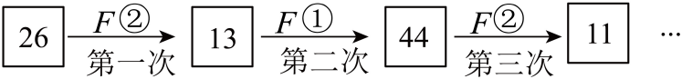
若n=449，则第449次“F运算”的结果是多少？
【答案】8
【分析】本题考查的是数字的规律探究，能根据所给条件得出n=449时六次的运算结果，找出规律是解答此题的关键．先分别计算出n=449时第一、二、三、四、五、六次运算的结果，找出规律再进行解答即可．
【详解】解：由“F运算”的含义，需要对正整数n分情况（奇数、偶数）循环计算，由于n=449为奇数应先进行F①运算，
即3×449+5=1352（偶数），
需再进行F②运算，
即1352÷23=169（奇数），
再进行F①运算，得到3×169+5=512（偶数），
再进行F②运算，即512÷29=1（奇数），
再进行F①运算，得到3×1+5=8（偶数），
再进行F②运算，即8÷23=1，
再进行F①运算，得到3×1+5=8（偶数），…，
即第1次运算结果为1352，
第2次运算结果为169，
第3次运算结果为512，
第4次运算结果为1，第5次运算结果为8，…，
可以发现第6次运算结果为1，第7次运算结果为8，
从第6次运算结果开始循环，且奇数次运算的结果为8，偶数次为1，而第449次是奇数，
这样循环计算一直到第449次“F运算”，得到的结果为8．
16．（23-24七年级上·广东广州·期中）阅读材料：
材料一：对实数a，b，定义Fa,b的含义为：当a≤b时，Fa,b=a+b；当a>b时，Fa,b=a−b．例如：F1,3=1+3=4；F2,−1=2−−1=3．
材料二：关于数学家高斯的故事：2000多年前，高斯的老师提出了下面的问题：
1+2+3+⋅⋅⋅+100=？据说，当其他同学忙于把100个数逐项相加时，十岁的高斯却用下面的方法迅速算出了正确答案：1+100+2+99+⋅⋅⋅+50+51=101×50=5050．
也可以这样理解：令S=1+2+3+⋅⋅⋅+100①，
则S=100+99+⋅⋅⋅+3+2+1②，
①+②得：2S=1+100+2+99+⋅⋅⋅+100+1=100×1+100=10100，
即S=100×1+1002=5050．
解决问题：
(1)F(−1，3)= ；F(2，−3)= ；
(2)已知x+y=20，且x>y，求F6,x−F10,y的值；
(3)对于正数a，满足关系式F−a2+1,1=−2时，求：F1,a+99+F2,a+99+F3,a+99+⋅⋅⋅+F199,a+99值．
【答案】(1)2，5
(2)16
(3)20203
【分析】（1）利用新定义计算解题即可；
（2）根据x+y=20,且x>y,可得x>10,y<10,再根据当a≤b时, F(a,b)=a+b ；当a>b时, F(a,b)=a−b ,即可求解；
（3）由于−a²+1<1,由F−a²+11=−2,可得a²=4,根据a是正数可求a，再代入F(1,a+99)+F(2,a+99)+F(3,a+99)+…+F(199,a+99)求值即可.
【详解】（1）解：F(−1，3)=−1+3=2；
F(2，−3)=2−(−3)=5；
故答案为：2，5；
（2）∵x+y=20,且 x>y,
∴x>10,y<10,
∴F(6,x)−F(10,y)
=6+x−(10−y)
=x+y−4
=20−4
=16，
故F(6,x)−F(10,y)的值为16；
（3）∵a为正数,
∴a>0,a²>0,−a²<0，
∴1−a²<1，
∴F−a²+11=−a²+1+1=−2，
∴a²=4,则a=2(负值舍去)，
∴a+99=2+99=101
∴F(1,a+99)+F(2,a+99)+…+F(199,a+99)
=F(1,101)+F(2,101)+⋯+F(101,101)+F(102,101)+⋯+F(199,101)
=(1+101)+(2+101)+…+(101+101)+(102−101)+…+(199−101)
=101×101+(1+2+3+…+101)+(1+2+…+98)
=101×101+1+101×1012+1+98×982
=101×101+101×51+99×49
=101×152+99×49
=15352+4851
=20203．
【点睛】此题考查了规律型：数字的变化类，关键是通过观察得出题目中的规律，并用公式表示出来，注意公式的灵活应用．
17．（24-25七年级上·江西南昌·期中）【概念学习】
定义：求若干个相同的有理数（均不等于0）的除法运算叫做除方，如2÷2÷2，−3÷−3÷−3÷−3等．类比有理数的乘方，我们把2÷2÷2记作23，读作“2的下3次方”，−3÷−3÷−3÷−3记作−34，读作“−3的下4次方”．一般地，把a÷a÷a÷⋅⋅⋅⋅⋅⋅÷an a≠0记作an，读作“a的下n次方”．
（1）直接写出计算结果：(−2)4=______，(13)3= ______．
（2）【深入探究】
我们知道，有理数的减法运算可以转化为加法运算，除法运算可以转化为乘法运算，有理数的除方运算如何转化为乘方运算呢？
仿照上面的算式，将下列运算写成幂的形式（包括写出过程）：
①a6= ，
②(−15)5 ．
（3）将一个非零有理数a的下n次方写成幂的形式是：an=______．（只写最后结果）．
（4）【结论应用】计算：62025−5×(−16)2026的值．
【答案】（1）14，3；（2）①a6=(1a)4；②(−15)5=(−5)3；（3）1an−2；（4）62024
【分析】本题考查了有理数的混合运算，涉及新定义，解题的关键是熟练掌握有理数相关运算法则，能根据新定义列出算式．
（1）由新定义列出算式计算即可；
（2）根据新定义列出算式，化为乘方形式即可；
（3）根据（2）的计算结果得出规律；
（4）根据有理数的混合运算顺序和运算法则及除方的运算法则计算即可．
【详解】（1）解：(−2)4=(−2)÷(−2)÷(−2)÷(−2)=1×(−12)×(−12)=14，(13)3=13÷13÷13=3，
故答案为：14，3；
（2）解：①a6=a÷a÷a÷a÷a÷a=a×1a×1a×1a×1a×1a=(1a)4；
②(−15)5=(−15)÷(−15)÷(−15)÷(−15)÷(−15)=(−15)×(−5)(−5)(−5)(−5)=(−5)3；
（3）解：an=1an−2，
故答案为：1an−2；
（4）解：62025−5×(−16)2026
=62025−5×(−6)2024
=62025−5×62024
=62024×(6−5)
=62024．
18．（24-25七年级上·北京·期中）小东对有理数a,b定义了一种新的运算，叫作“乘减法”，记作“a⊗b”．他写出了一些按照“乘减法”运算的算式：+3⊗+2=+1，+11⊗−3=−8，−2⊗+5=−3，−6⊗−1=+5，+13⊗+1=+23，−4⊗+0.5=−3.5，−8⊗−8=0，+2.4⊗−2.4=0，+23⊗0=+23，0⊗−74=+74．
小玲看了这些算式后说：“我明白你定义的乘减法法则了．”她将法则整理出来给小东看，小东说：“你的理解完全正确．”
(1)请将下面小玲整理的“乘减法”法则补充完整：
绝对值不相等的两数相“乘减”，同号得______，异号得______，并______；绝对值相等的两数相“乘减”，都得______；一个数与0相“乘减”，或0与一个数相“乘减”，都得这个数的绝对值．
(2)画两个有理数进行“乘减法”的计算流程图．
【答案】(1)正，负，并用较大的绝对值减去较小的绝对值；0
(2)见解析
【分析】本题主要考查了有理数的混合运算，本题是新定义型，准确理解新定义的规定并熟练运用是解题的关键．
（1）根据题中给出的例子即可得出结论；
（2）依据（1）中总结的法则分类解答即可．
【详解】（1）解：∵+3⊗+2=+1，+11⊗−3=−8，−2⊗+5=−3，−6⊗−1=+5，+13⊗+1=+23，−4⊗+0.5=−3.5，−8⊗−8=0，+2.4⊗−2.4=0，+23⊗0=+23，0⊗−74=+74．
∴绝对值不相等的两数相“乘减”，同号得正，异号得负，并用较大的绝对值减去较小的绝对值；
绝对值相等的两数相“乘减”，都得0；
一个数与0相“乘减”，或0与一个数相“乘减”，都得这个数的绝对值．
故答案为：正，负，并用较大的绝对值减去较小的绝对值；0；
（2）解：由题意，两个有理数进行“乘减法”的计算流程图：
19．（24-25七年级上·湖南怀化·期中）定义新运算a∇b=a−b−b，如4∇2=4−2−2=2−2=0；
若a∇b=0，则称a与b互为“望一”数；
若a∇b=−a，则称a与b互为“望外”数；
(1)计算：−4∇−2= ．
(2)下列互为“望一”数的是 ．互为“望外”数的是 ．
①6∇3；②5∇2；③3∇4；④2.8∇1.4；⑤1∇3；
(3)若x∇1+x∇−1=2，则x可以取哪些整数？
【答案】(1)4；
(2)①④；③⑤；
(3)−1或0或1．
【分析】本题考查了新定义运算、绝对值的化简、解一元一次方程等知识点，根据新定义将所给等式转化为带有绝对值的式子是解答本题的关键．
（1）根据新定义的运算代入数值计算即可；
（2）根据新定义的运算代入数值计算，再根据“望一”数和“望外”数的定义逐个进行判断即可；
（3）根据新定义的运算化简后，通过分类讨论x的取值范围把含有绝对值的方程转化为一元一次方程，即可求解；
【详解】（1）解：(−4)∇(−2)，
=−4−−2−(−2)，
=2+2，
=4，
故答案为：4．
（2）①∵6∇3=6−3−3=3−3=0，
∴6∇3是互为“望一”数；
②∵5∇2=5−2−2=3−2=1，
∴5∇2既不是互为“望一”数，也不是互为“望外”数；
③∵3∇4=3−4−4=1−4=−3，
∴3∇4是互为“望外数”；
④∵2.8∇1.4=2.8−1.4−1.4=1.4−1.4=0，
∴2.8∇1.4是互为“望一数”；
⑤∵1∇3=1−3−3=2−3=−1，
∴1∇3是互为“望外数”；
综上所述：互为“望一”数的是①④，互为“望外”数的是③⑤．
故答案为：①④；③⑤．
（3）∵(x∇1)+[x∇(−1)]=2，
∴x−1−1+x+1+1=2，
∴x−1+x+1=2，
当x≤−1时，1−x−x−1=2，
解得x=−1，
当−1<x<1时，1−x+x+1=2恒成立，
则满足−1<x<1的任意实数x都满足题意，
当x≥1时，x−1+x+1=2，
解得x=1，
∴x的取值范围为−1≤x≤1，
又∵x为整数，
∴x=−1或0或1．
20．（23-24七年级上·湖南益阳·期中）定义新运算：a∗b=1a−1b，a⊗b=1ab（右边的运算为平常的加、减、乘、除）．
例如∶3∗7=13−17=421，3⊗7=13×7=121．
若a⊗b=a∗b，则称有理数a，b为“隔一数对”．
例如：2⊗3=12×3=16，2∗3=12−13=16，2⊗3=2∗3，所以2，3就是一对“隔一数对”．
(1)下列各组数是“隔一数对”的是 （请填序号）
①a=1，b=2；②a=−43，b=−13；③a=−1，b=1．
(2)计算：−3∗4−−3⊗4+−2023∗−2023．
(3)已知两个连续的非零整数都是“隔一数对”．
计算：1⊗2+2⊗3+3⊗4+4⊗5+⋯+2020⊗2021．
【答案】(1)①②
(2)−12
(3)20202021
【分析】本题考查有理数的定义新运算，仔细审题，理解题干中的新定义，熟练掌握有理数的混合运算法则是解题关键．
（1）按照题干定义进行计算，判断是否满足条件即可；
（2）直接根据题目定义分别计算各项，然后再合并求解即可；
（3）根据定义进行变形和拆项，然后根据规律求解即可．
【详解】（1）解：①a=1，b=2；
∵a∗b=11−12=12，a⊗b=11×2=12，
∴a⊗b=a∗b，则①是“隔一数对”；
②a=−43，b=−13；
∵a∗b=1−43−1−13=94，a⊗b=1−43×−13=94，
∴a⊗b=a∗b，则②是“隔一数对”；
③a=−1，b=1；
∵a∗b=1−1−11=−2，a⊗b=1−1×1=−1，
∴a⊗b≠a∗b，则③不是“隔一数对”；
故答案为：①②；
（2）解：−3∗4−−3⊗4+−2023∗−2023
=1−3−14−1−3×4+1−2023−1−2023
=1−3−14−1−3×4+0
=−712+112
=−12；
（3）解：1⊗2+2⊗3+3⊗4+4⊗5+⋯+2020⊗2021
=1∗2+2∗3+3∗4+4∗5+⋯+2020∗2021
=11−12+12−13+13−14+14−15+⋯+12020−12021
=1−12021
=20202021．
【题型3 阅读理解】
21．（24-25七年级上·甘肃兰州·期中）先阅读下面材料，然后解答问题：
在一条直线上有依次排列的nn>1台机床在工作，我们要设置一个零件供应站P，使这n台机床到供应站P的距离总和最小．要解决这个问题，先“退”到比较简单的情形：
如图①，如果直线上有2台机床时，很明显设在A1和A2之间的任何地方都行，因为甲和乙所走的距离之和等于A1和A2的距离．
如图②，如果直线上有3台机床时，不难判断，供应站设在中间A处最合适，不难知道，如果直线上有4台机床，P应设在第2台与第3台之间的任何地方；有5台机床，P应设在第3台位置．
问题（1）：如果直线上有7台机床，P应在何处?
问题（2）：有n台机床时，P应设在何处?
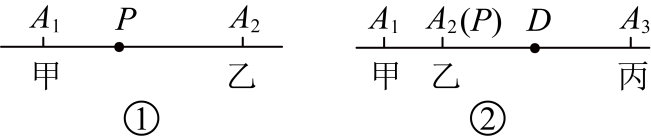
【拓广应用】
（3）求x−1+2x−3+3x−4的最小值．
（4）求fx=x−1+2x−1+⋯+2011x−1的最小值．
【答案】（1）P应该在第四台位置；（2）当n为奇数时，P应该在第n+12台位置；当n是偶数时，P应该在第n2台和第n2+1台之间的任何位置；（3）5；（4）1005
【分析】本题考查了图形的变化规律，涉及去绝对值、有理数混合运算等知识，理解题意，找出规律，分类求解即可得到答案．分类讨论是解题的关键．
（1）由阅读材料，找准规律即可得到答案；
（2）由阅读材料，找准规律即可得到答案；
（3）由阅读材料，找准规律，去绝对值即可得到答案；
（4）由阅读材料，找准规律，得到当x=11006时，fx=x−1+2x−1+⋯+2011x−1有最小值，将x=11006代入代数式，去绝对值求解即可得到答案．
【详解】解：（1）由阅读材料可知，7是奇数，故P应该在第四台位置；
（2）由阅读材料可知：
当n为奇数时，P应该在第n+12台位置；
当n是偶数时，P应该在第n2台和第n2+1台之间的任何位置；
（3）由题意，在直线上相当于有3台机器，则当P在3所对应的点时，即当x=3时，x−1+2x−3+3x−4有最小值，
∴ x−1+2x−3+3x−4
=3−1+23−3+33−4
=2+3
=5；
（4）fx=x−1+2x−1+⋯+2011x−1表示x的点到表示1、12、13…12011的点距离之和，共有2011个点，是奇数个，
∴当x=11006时，fx=x−1+2x−1+⋯+2011x−1有最小值，
fx=x−1+2x−1+⋯+2011x−1
=11006−1+2×11006−1+⋯+2011×11006−1
=10051006+10041006+10031006+⋯+11006+0+11006+⋯+10031006+10041006+10051006
=2×10051006+10041006+10031006+⋯+11006
=21006×1+2+⋯+1005
=21006×1+1005×10052
=1005．
22．（24-25七年级上·河北邯郸·期中）阅读下面材料：
计算：−130÷23−110+16−25．
解法一：原式=−130÷23−−130÷110+−130÷16−130÷−25=−120+13−15+112=16．
解法二：原式=−130÷23+16−110+25=−130÷56−12=−130×3=−110．
解法三：原式的倒数=23−110+16−25÷−130=23−110+16−25×−30=−20+3−5+12=−10，故原式=−110．
(1)上述三种解法得出的结果不同，肯定有解法是错误的，你认为解法______是错误的；
(2)请你进行简便计算：−142÷16−314+23−27．
【答案】(1)一
(2)−114
【分析】本题考查有理数四则混合运算，熟练掌握有理数混合运算法则是解题的关键．
（1）在利用分配律计算时，除法需要先变成乘法，才能够使用，并且需要连同其前面的正负号带上，通过观察三种解法即可得到答案；
（2）通过观察可得到解法三最简便，所以利用解法三的方法即可得到答案．
【详解】（1）解：∵在利用分配律的时候，除法需要先变成乘法，才能够使用，且解法一的计算结果与其它两种不同，
∴解法一不正确；
故答案为：一；
（2）解：原式的倒数=16−314+23−27÷−142
=16−314+23−27×−42
=−7+9−28+12
=−14，
故原式=−114．
23．（2024七年级上·全国·专题练习）学习情境·阅读理解阅读：我们知道，所有无限循环小数都可以化成分数，那么如何把无限循环小数化为分数呢？下面介绍一种方法：
例：把0.3和0.67化成分数．
0.3乘10，原数位每位进一位，得到3.3，即0.3×10=3.3，再减去0.3得3，算式如下：
0.3×10−0.3=3.3−0.3=3，即9×0.3=3，所以0.3=39=13；同样道理，把0.67化成分数的算式如下：
0.67×100−0.67=67.67−0.67=67，即99×0.67=67，所以0.67=6799．
根据上面材料完成：
(1)直接把下面无限循环小数化为分数0.5=______，0.17=______；
(2)请把下面无限循环小数0.103,0.13化为分数，写出计算过程．
【答案】(1)59 ，1799
(2)0.103=103999，0.13=215，见解析
【分析】此题主要考查了有理数的混合运算，解题的关键是仿照材料解题．
（1）仿照材料里的方法将无限循环小数化为分数即可；
（2）仿照材料里的方法将0.103化为分数；先仿照材料求出0.03=130，再根据0.13=0.1+0.03计算即可．
【详解】（1）解：0.5×10−0.5=5.5−0.5=5，即9×0.5=5，
∴0.5=59，
0.17×100−0.17=17.17−0.17=17，即99×0.17=17，
∴0.17=1799，
故答案为：59 ，1799；
（2）解：0.103×1000−0.103=103.103−0.103=103，即999×0.103=103，
∴0.103=103999；
0.03×100−0.03=3.33−0.03=3.3，即99×0.03=3.3，
∴0.03=3.399=33990=130，
∴0.13=0.1+0.03=0.1+130=215
即0.13=215．
24．（24-25七年级上·安徽蚌埠·期中）阅读下列材料：我们知道x的几何意义是数轴上数x的对应点与原点之间的距离，即x=x−0，也可以说，x表示数轴上数x与数0对应点之间的距离．这个结论可以推广为A−B表示数轴上数A与数B对应点之间的距离．
(1)用绝对值表示数轴上−5与3之间的距离；
(2)若x−2=3，则x可以表示数轴上的哪些数；
(3)依据（2）的结论，求使得x−3+x+4=7成立的所有符合条件的整数的和；
(4)由以上的探索猜想对于任何有理数x，求出x−4+x+5的最小值？
【答案】(1)−5−3
(2)−1，
(3)−4
(4)9
【分析】此题考查了绝对值的几何意义，有理数加法，数轴，熟练掌握数轴上点的特征，绝对值的几何意义是解题的关键．
（1）根据数表示的几何意义即可进行求解；
（2）根据在数轴上，某点到2所对应的点的距离为3，即可得到符合条件的数；
（3）根据（2）结论表示为：在数轴上某点到−4所对应的点的距离和到3所对应的点的距离之和为7，得出满足条件的整数x的值，再求和即可；
（4）由x−4+x+5的几何意义是数轴上表示有理数x的点与表示有理数4的点之间的距离与数轴上表示有理数x的点与表示有理数−5的点之间的距离之和，则当时，最小，求出答案即可．
【详解】（1）解：∵A−B表示数轴上数A与数B对应点之间的距离，
∴数轴上−5与3之间的距离表示为−5−3；
（2）x−2=3表示：在数轴上，某点到2所对应的点的距离为3，
∴x=−1或x=5，
可以表示数轴上的数−1或数5；
（3）x−3+x+4=7，表示为在数轴上某点到−4所对应的点的距离和到3所对应的点的距离之和为7，
∴−4≤x≤3，
∴满足条件的整数x可为−4，−3，−2，−1，0，1，2，3，
∴整数的和为−4+−3+−2+−1+0+1+2+3=−4；
（4）解：x−4+x+5表示在数轴上表示到4和−5的距离之和，
所以当x在−5与4之间的数轴上时，有最小值为4−−5=4+5=9，
即x−4+x+5的最小值为9．
25．（24-25七年级上·福建福州·期中）阅读材料，并回答问题：
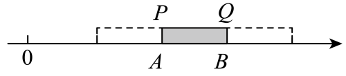
(1)如图，有一根木尺PQ放置在数轴上，它的两端P，Q分别落在A，B两点处，将木尺在数轴上水平移动，当点P移动到点B时，点Q所对应的数为32；当点Q移动到点A时，点P所对应的数为8，利用所学知识求出点A、点B所表示的数及木尺PQ的长；
(2)借助上面的方法解决问题：一天，小明去问爷爷的年龄，爷爷说：“我若是你现在这么大你还要38年才出生呢，你若是我现在这么大，我已经是115岁！”小明纳闷，爷爷今年到底是多少岁？请你画出示意图，求出小明和爷爷的年龄，并写出合理的计算过程．
【答案】(1)16，24，8cm
(2)见解析，小明13岁，爷爷64岁，见解析
【分析】本题主要考查了用数轴解决实际问题，弄清题意、画出图示、找到题目中的等量关系是解决问题的关键．
（1）由题意可知，点B到数32的距离、P，Q的距离、点A到数8的距离相等，由线段图可知PQ是AB的三分之一，据此求得PQ的长，进而求得点A、点B所表示的数；
（2）仿照（1）画出图，可知爷爷和小明的年龄差为115−−38÷3=51，进而求得小明和爷爷的年龄．
【详解】（1）解：由题意可知，点B到数32的距离、P，Q的距离是AB的三分之一、点A到数8的距离相等，
所以木尺PQ的长为(32−8)÷3=8(cm)，
所以点A表示的数为8+8=16，
点B表示的数为32−8=24．
（2）解：如图，易得爷爷和小明的年龄差为115−−38÷3=51（岁），
所以爷爷的年龄为64−51=13（岁），
小明的年龄为b−a=16（岁），
所以小明13岁，爷爷64岁．
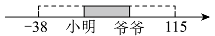
26．（24-25七年级上·江苏徐州·期中）【材料阅读】西汉前期民间流传着一则故事．大禹治水时，洛阳西南洛宁县的洛河中浮出一只神龟，龟背上有一张象征吉祥的图案，人称“洛书”．如图1，洛书上有三行三列的纵横图，用实心点或空心点的个数表示数字，分别对应着1～9这9个数字，每行、列及两条对角线上的三个数相加的结果相同．“洛书”用今天的数学符号翻译出来就是一个三阶幻方（如图2）又名九宫格，是一种将9个数字（数字不重复使用）安排在三行三列的正方形格子中，使每行、列和对角线上的数字之和都相等．
【问题解决】
（1）根据“洛书”中表达的意思，将图2中的三阶幻方补充完整；
（2）如图3，是一个新的三阶幻方，请根据图中给出的数据，将1，2，3，4，5这五个数字填入表格，补全这个新的三阶幻方；
【拓展思考】
（3）有3个正方形，每个正方形的顶点处都有一个“〇”．如图4，将−12,−10,−8,−6,−4,−2,1,3,5,7,9,11这12个数字填入恰当的位置后（数字不重复使用），每个正方形4个顶点“〇”中的数的和都相等，求ax+by的值．
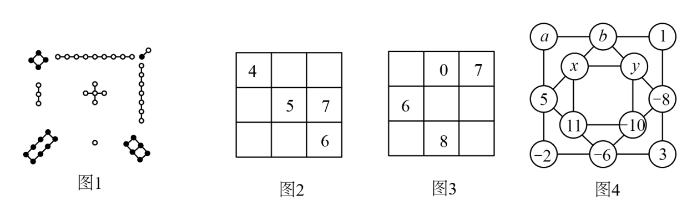
【答案】（1）见解析；（2）见解析；（3）−120或111
【分析】本题考查了有理数的四则运算，注重考查学生的思维能力和运算能力．
（1）根据题意可知，每行、列和对角线上的数字之和都为15，进而求解即可；
（2）根据题意，新的三阶幻方的每行、列和对角线上的数字之和为：0+1+2+3+4+5+6+7+8÷3=12，进而求解即可；
（3）根据题意，每个正方形4个顶点“〇”中的数的和都为：−12−10−8−6−4−2+1+3+5+7+9+11÷3=−2，进而代入求解即可．
【详解】解：（1）根据题意可知，每行、列和对角线上的数字之和都相等，
∴对角线上的数字之和为：4+5+6=15，
第一行第三列的数为：15−7−6=2，
第一行第二列的数为：15−4−2=9，
第三行第一列的数为：15−2−5=8，
第三行第二列数为：15−6−8=1，
第二行第一列数字为：15−5−7=3，
所以三阶幻方补充如图2；
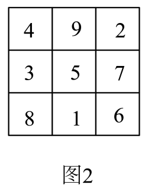
（2）根据题意，新的三阶幻方的每行、列和对角线上的数字之和为：（0+1+2+3+4+5+6+7+8）÷3=12，
第一行第一列的数为：12−0−7=5，
第三行第一列的数为：12−5−6=1，
第二行第二列的数为：12−0−8=4，
第二行第三列的数为：12−6−4=2，
第三行第三列的数为：12−1−8=3；
补全的三阶幻方如图3所示；
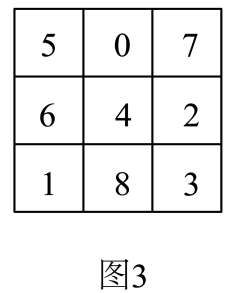
（3）根据题意，每个正方形4个顶点“〇”中的数的和都为：−12−10−8−6−4−2+1+3+5+7+9+11÷3=−2，
∴−2+a+1+3=−2，5+b+−8+−6=−2，
解得a=−4,b=7，
又∵x+y+11+−10=−2，且数字不重复，
∴x=9,y=−12或x=−12,y=9，
当x=9,y=−12时，
∴ax+by=−4×9+7×−12=−120；
当x=−12,y=9时，
∴ax+by=−4×−12+7×9=111；
综上，ax+by的值为−120或111．
27．（24-25七年级上·安徽黄山·期末）生活中的数学问题
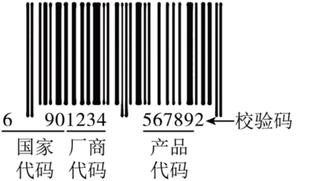
【阅读材料】 如图，商品条形码是商品的“身份证”，共有13位数字．它是由前12位数字和校验码构成，其结构分别代表“国家代码、厂商代码、产品代码、和校验码”．
比如右图的13位数字“6901234567892”中，
“690”为国家代码，“1234”为厂商代码，
“56789”为产品代码，而最后一位数字“2”
则为校验码．
其中，校验码可以用来校验商品条形码中前12
位数字代码的正确性．它的编制是按照特定的
算法得来的．其算法为：
步骤1：计算前12位数字中偶数位数字的和a，即a=9+1+3+5+7+9=34；
步骤2：计算前12位数字中奇数位数字的和b，即b=6+0+2+4+6+8=26；
步骤3：计算3a与b的和c，即c=3a+b=3×34+26=128；
步骤4：取大于或等于c且为10的整数倍的最小数d，即d=130；
步骤5：计算d与c的差就是校验码m，即m=130−128=2．
【解决问题】
①若甲商品条形码的数字为“6903244672483”，利用上述校验码的算法，判断此条形码的真伪，并说明理由．
②若某正规商品的条形码数字为“978740■376241”，其中有一个数字被污染了，请求出这个被污染的数．
【答案】① 条形码是假的；见解析；②被污染的数为8
【分析】本题考查的是有理数的混合运算，一元一次方程的应用；
（1）根据题干信息列式计算再验证即可；
（2）设被污染的数为x，由题意得：112+x=120，再解方程即可；
【详解】解：① 条形码是假的
理由：由题意得：a=9+3+4+6+2+8=32，
b=6+0+2+4+7+4=23，
∴c=3a+b=3×32+23=119 ，
∵d是大于或等于c且为10的整数倍的最小数，
∴d=120，
∴校验码m=d−c=120−119=1≠3
∴条形码是假的.
② 设被污染的数为x，由题意得：
∴a=7+7+0+3+6+4=27，
b=9+8+4+x+7+2=30+x，
∴c=3a+b=3×27+30+x=111+x，
∵校验码m=1 ，
∴d=c+m=112+x ，
∵d是大于或等于c且为10的整数倍的最小数，且0≤x<10，
∴d=120 ，
∴112+x=120，
∴x=8；
28．（24-25七年级上·广西玉林·期中）阅读下列材料并解决问题：
数轴是一种非常重要的数学工具，它使数和数轴上的点建立起对应关系，揭示了数与形之间的联系，两个有理数在数轴上对应的点之间的距离，可以用这两个数的差的绝对值表示，这也体现了绝对值的几何意义．若在数抽上有理数a对应的点为A，有理数b对应的点为B，则A，B两点之间的距离可表示为|a−b|或|b−a|，记为|AB|=|a−b|=|b−a|．如式子|x−3|的几何意义是数轴上表示有理数3的点与表示有理数x的点之间的距离．
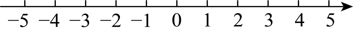
根据上述材料，回答下列问题：
(1)−2与3的距离是______；
(2)式子|x+2|+|x−3|的最小值是______；
(3)应用：如图，某环形道路上顺次排列有四家快递公司：A，B，C，D，它们依次有快递车15辆，9辆，5辆，11辆，为使各快递公司的车辆数相同，允许一些快递公司向相邻公司调出，问共有多少种调配方案，使调动的车辆数最少？并求出调出的最少车辆数．
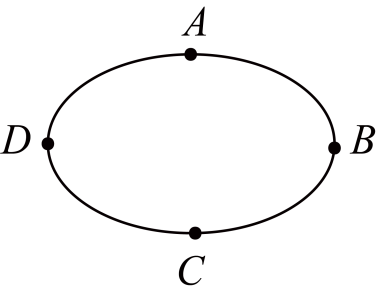
【答案】(1)5
(2)5
(3)有5种方案调运车辆数最小，都为10辆．
【分析】本题考查的是数轴上两点之间的距离，绝对值的含义；
（1）直接根据两点之间的距离公式计算即可；
（2）由|x+2|+|x−3|表示在数轴上数x对应的点与数−2，3对应的点的距离之和，当数x在−2与3之间时，即−2≤x≤3时，|x+2|+|x−3|最小，再进一步解答即可；
（3）先求解车辆总数与每个快递公司的车辆数10辆，再设计最小调运方案即可．
【详解】（1）解：−2与3的距离是3−−2=3+2=5；
（2）解：∵|x+2|+|x−3|表示在数轴上数x对应的点与数−2，3对应的点的距离之和，
∴当数x在−2与3之间时，即−2≤x≤3时，|x+2|+|x−3|最小，
∴当−2≤x≤3时，式子|x+2|+|x−3|有最小值，最小值是3−−2=3+2=5，
（3）解：根据题意，15+9+5+11=40（辆），
40÷4=10（辆），
即共有40辆车，每个公司10辆，
∴调运方案如下：
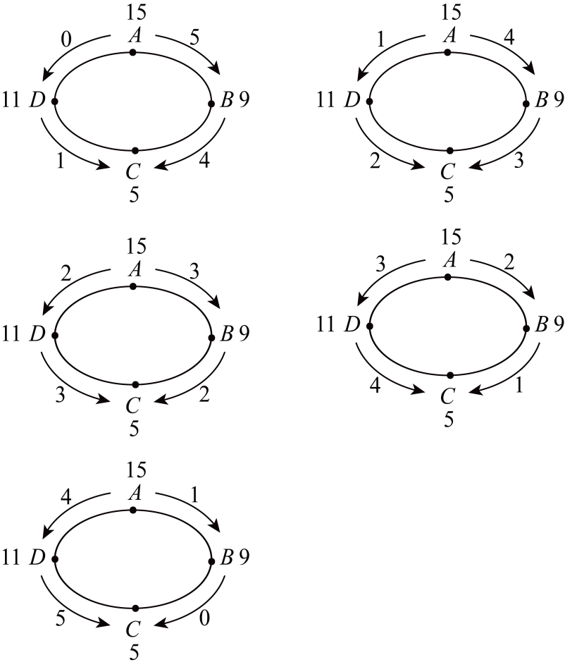
∴有5种方案调运车辆数最小，都为10辆．
29．（24-25七年级上·福建厦门·期中）阅读材料，并回答问题
钟表中蕴含着有趣的数学运算．例如现在是10点钟，4小时以后是几点钟？虽然10+4=14，但在表盘上看到的是2点钟，如果用符号“⊕”表示钟表上的加法，则10⊕4=2．由上述材料可知：
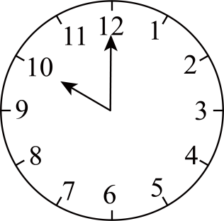
(1)9⊕6=________；
(2)类比几个相同加数的和可以写成乘积的形式，我们可定义钟表上的乘法，用符号“⊗”表示，即3⊗4=3⊕3⊕3⊕3．
①计算：4⊗2024；
②类比有理数中的倒数，我们可定义：若a⊗b=1，则称b是a的钟表倒数（其中a为1∼12中的任意一个整数，b为自然数）．请用含n（n为自然数）的式子表示出5的所有钟表倒数．
【答案】(1)3
(2)① 8 ；②12n+15
【分析】本题考查有理数的混合运算、新定义运算：
（1）根据材料可知9⊕6=9+6−12，由此可解；
（2）①先计算4×2024，结果除以12，余数即为所求；②设5⊗m=1，则5m÷12余数为1，设商为n，列式表示出m即可．
【详解】（1）解：由题意知，9⊕6=9+6−12=3，
故答案为：3；
（2）解：①4×2024=8096，8096÷12=674……8，
可得4⊗2024=8；
②设5⊗m=1，
由题意知，5m÷12余数为1，设商为n，
则5m=12n+1，
因此m=12n+15
即5的所有钟表倒数为12n+15．
30．（24-25七年级上·广东深圳·期中）《庄子∙天下》：“一尺之棰，日取其半，万世不竭．”意思是说：一尺长的木棍，每天截掉一半，永远也截不完．我国智慧的古代人在两千多年前就有了数学极限思想，探究课上，同学们运用此数学思想研究下列问题．
“聪慧组”的同学将一个边长为1的正方形纸片分割成若干个部分，并用数形结合的思想解决下列问题
(1)请按照“聪慧组”同学的思路填空
12+14=1−122；
12+14+18=1−123
12+14+18+116=1−________；
猜想：
12+14+18+116+⋯+1210=1− ；
(2)为了证明“聪慧组”同学得到的结论，“明辨组”的同学采用了以下方法进行证明，请将证明过程补充完整．
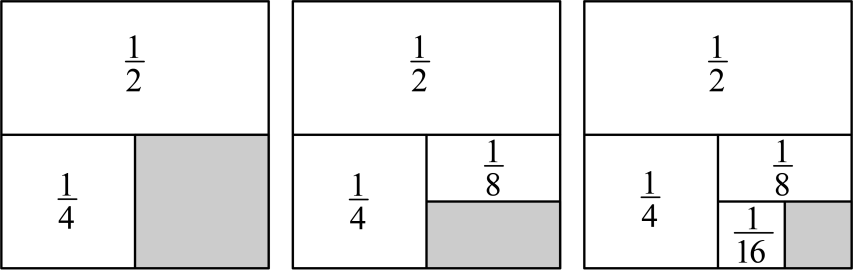
设S=12+14+18+116+⋯+1210 ①
则2S=2×12+14+18+116+⋯+1210
即2S=2×12+2×14+2×18+2×116+⋯+2×1210
化简得2S=1+12+14+18+116+⋯+129 ②
②−①得：2S−S=1+12+14+18+116+⋯+129−12+14+18+116+⋯+1210
即S=___________；
进一步可猜想：
12+14+18+116+⋯+12n=___________．
通过阅读，你一定学到了多种解决问题的方法．
(3)请选择“聪慧组”的作图法或“明辨组”的代数法进行计算：23+232+232+⋯+236 （只选一种解法，若选择作图，请标注出各部分图形的面积，下图是边长为1的正方形）
【答案】(1)124；1210；
(2)1−1210；1−12n；
(3)23+232+232+⋯+236=1−136，见解析．
【分析】（1）根据题意中得到的规律即可求解；
（2）根据题意中得到的规律进行有理数的混合运算即可求解；
（3）根据题意中得到的规律进行有理数的混合运算和画出图形即可求解；
本题考查了数字规律，读懂题意，找出规律是解题的关键．
【详解】（1）解：12+14=1−122；
12+14+18=1−123；
12+14+18+116=1−124；
⋯；
12+14+18+116+⋯+1210=1−1210；
故答案为：124；1210；
（2）解：②−①得：2S−S=1+12+14+18+116+⋯+129−12+14+18+116+⋯+1210，
即S=1−1210；
设S=12+14+18+116+⋯+12n ①
则2S=2×12+14+18+116+⋯+12n
即2S=2×12+2×14+2×18+2×116+⋯+2×12n
化简得2S=1+12+14+18+116+⋯+12n−1 ②
②−①得：2S−S=1+12+14+18+116+⋯+12n−1−12+14+18+116+⋯+12n，
即S=1−12n；
故答案为：1−1210；1−12n；
（3）解：解法一：设S=23+232+232+⋯+236①，
则3S=3×23+232+232+⋯+236，
化简得3S=3×23+3×232+3×232+⋯+3×236=2+231+232+⋯+235②，
②−①得：3S−S=2+231+232+⋯+235−23+232+232+⋯+236=2−236，
∴S=1−136；
解法二：如图，
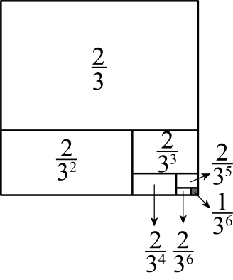
由图可知：23+232+232+⋯+236=1−136．
【题型4 综合与实践】
31．（24-25七年级上·全国·期中）综合与实践：一只电子跳蚤从数轴上原点处出发，第一次向左跳动1个单位，第二次向右跳动2个单位，第三次向左跳动3个单位，第四次向右跳动4个单位，第五次向左跳动5个单位，第六次向右跳动6个单位，如此往返．
(1)第1次跳动的落点位置表示的有理数是多少？第2次跳动的落点位置表示的有理数是多少？第2024次跳动的落点位置表示的有理数是多少？
(2)若该跳蚤从－8对应的点处出发，则第1次跳动的落点位置表示的有理数是多少？第2024次跳动的落点位置表示的有理数是多少？第几次跳动的落点位置是原点？
(3)若该跳虫从m（m是正整数）对应的点处出发，则第1次跳动的落点位置表示的有理数是多少？第2024次跳动的落点位置表示的有理数是多少？第2n（n是正整数）次跳动的落点位置表示的有理数是多少？第几次跳动的落点位置是原点？
【答案】(1)−1，1，1012
(2)−9，1004，第16次
(3)m−1，m+1012，第2m−1次
【分析】本题主要考查有理数的加减运算及整数的加减运算，解题的关键是理解题意；
（1）根据有理数的加减运算可分别得出前6次跳蚤落点所表示的数，然后根据此规律可进行求解；
（2）同理（1）可进行求解；
（3）根据（1）（2）所得规律可进行求解
【详解】（1）解：根据题意可知，第1次跳动的落点位置表示的有理数是0−1=−1，
第2次跳动的落点位置表示的有理数是0−1+2=1，
第3次跳动的落点位置表示的有理数是0−1+2−3=−2，
第4次跳动的落点位置表示的有理数是0−1+2−3+4=2，
第5次跳动的落点位置表示的有理数是0−1+2−3+4−5=−3，
第6次跳动的落点位置表示的有理数是0−1+2−3+4−5+6=3，
…
∴第2024次跳动的落点位置表示的有理数是0−1+2−3+4−5+6−⋯−2023+2024=0+1012×1=1012．
（2）解：跳蚤从−8对应的点处出发，第1次跳动的落点位置表示的有理数是−8−1=−9，
同理（1）可知：第2024次跳动的落点位置表示的有理数是
−8−1+2−3+4−5+6−⋯−2023+2024=−8+1012×1=1004，
因为−8−1+2−3+4−5+⋯+16=−8+8=0，
所以第16次跳动的落点位置是原点．
（3）解：第1次跳动的落点位置表示的有理数是m−1，
∴第2024次跳动的落点位置表示的有理数m−1+2−3+4−5+6−⋯−2023+2024=m+1012×1=m+1012，
第2n（n是正整数）次跳动的落点位置表示的有理数是
m−1+2−3+4−5+6−⋯−2n−1+2n=m+n×1=m+n，
所以第2n+1次跳动的落点位置表示的有理数是m+n−2n+1，
易知m+n>0，令m+n−2n+1=0，
解得n=m−1，
所以2n+1=2m−1，
故第2m−1次跳动的落点位置是原点．
32．（24-25七年级上·广西百色·期中）综合与实践
【问题情境】
如图，周长为2个单位长度的圆片上有一点Q与数轴上的原点重合．
（1）把圆片沿数轴向左滚动1周，点Q到达数轴上点A的位置，点A表示的数是________；
（2）在（1）条件下，如果圆片Q点在数轴A点的位置再向右滚动3周，到达B点的位置，则点B所表示的数为________；
【问题拓展】
（3）圆片在数轴上向右滚动的周数记为正数，圆片在数轴上向左滚动的周数记为负数，运动情况依次记录如表：
计次 | 第1次 | 第2次 | 第3次 |
滚动周数 | +3 | −1 | −2 |
计次 | 第4次 | 第5次 | 第6次 |
滚动周数 | +4 | −3 | +m |
第6次向右滚动m（m为正整数）周后，点Q与原点的距离为6．
①请求出m的值；
②当圆片结束6次滚动时，求点Q一共运动的路程．
【答案】（1）−2；（2）4；（3）①m=2；②30个长度单位
【分析】本题主要考查了一元一次方程的应用，有理数的混合运算以及数轴，准确理解题意 是解题的关键．
（1）利用点A表示的数=0−2×转动的周数，即可求出结论；
（2）利用点B表示的数=点A表示的数+2×转动的周数，即可求出答案；
（3）①利用点O与原点的距离=2×每次转动的周数之和，可列出关于m的一元一次方程，即可得到答案．
②利用点Q运动的路程=2×每次转动的周数的绝对值之和，即可求出答案．
【详解】解：（1）根据题意得：0−2×1=−2，
故答案为：−2；
（2）根据题意可得：−2+2×3=4，
故答案为：4；
（3）①3+−1+−2+4+−3+m=6÷2
解得m=2
②3+1+2+4+3+2×2=30
答：点Q一共运动的路程为30个长度单位．
33．（23-24七年级上·广西桂林·期中）【综合与实践】
外卖送餐为我们生活带来了许多便利，某学习小组调查了一名外卖小哥一周的送餐情况，规定送餐量超过40单（送一次外卖称为一单）的部分记为“＋”，低于40单的部分记为“－”，如表是该外卖小哥一周的送餐量：
星期 | 一 | 二 | 三 | 四 | 五 | 六 | 七 |
送餐量（单位：单） | −4 | +11 | −2 | +19 | +20 | +22 | −3 |
(1)求该外卖小哥这一周平均每天送餐多少单？
(2)外卖小哥每天的工资由底薪30元加上送单补贴构成，送单补贴的方案如下：每天送餐量不超过40单的部分，每单补贴4元；超过40单但不超过50单的部分，每单补贴6元；超过50单的部分，每单补贴8元．求该外卖小哥这一周工资收入多少元？
【答案】(1)49单
(2)1790元
【分析】本题考查正负数的应用、有理数四则运算应用，理解题意，正确列出算式是解答的关键．
（1）先求得表格数据的平均数，再加上标准数40即可求解；
（2）根据工资底薪及补贴标准列式求解即可．
【详解】（1）解：由题意，40+−4++11+−2++19++20++22+−3÷7
=40+63÷7
=40+9
=49（单），
答：该外卖小哥这一周平均每天送餐49单；
（2）解：=30×7+40−4×4+40×4+10×6+1×8+40−2×4+40×4+10×6+9×8 +40×4+10×6+10×8+40×4+10×6+12×8+40−3×4
=210+144+228+152+292+300+316+148
=1790（元），
答：该外卖小哥这一周工资收入1790元．
34．（24-25七年级上·山东济南·期中）综合与实践
探究喷墨打印机的工作原理 | ||
素材1 | 喷墨式双向打印机通过喷射墨水完成文件打印．如图1，打印机外框架上有一根水平杆，喷头架在水平杆上来回移动完成喷墨．第一次，喷头架从左到右喷墨，停止后纸张向前移动；第二次，喷头架从停止处出发，反向完成喷墨，如此往复． | |
素材2 | 如图2，以这根水平杆所在的直线建立数轴，以水平杆的中点为原点，以向右的方向为正方向，用一个单位长度表示1cm．已知喷头架的初始位置为−10，向右2个单位长度记为+2，向左3个单位记为−3，以下记录了喷头架的6次运动情况：+18，−10，+6，−10，+8，−12． | 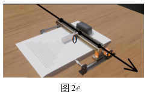 |
问题解决 | ||
任务1 | 确定位置 | 经过6次喷墨后，确定喷头架的最终位置． |
任务2 | 确定路程 | 经过6次喷墨后，求出喷头架移动的总路程． |
【答案】任务一：喷头架在初始位置−10；任务二：64cm．
【分析】本题考查了有理数的加法应用，正负数的应用，解题的关键是掌握有理数的加法运算法则．任务一：把6次运动的数据加起来，即可求解；任务二：把6次运动数据的绝对值相加即可求解．
【详解】任务一：18+−10+6+−10+8+−12=0，
答：喷头架在初始位置−10；
任务二：+18+−10++6+−10++8+−12=64cm，
答：喷头架移动的总路程为64cm．
35．（24-25七年级上·辽宁大连·阶段练习）综合与实践
【问题的发现与提出】
巴黎时间2024年8月4日晚上，在巴黎奥运会男子4×100米混合泳接力决赛中，中国队夺得金牌，打破美国长达四十年的垄断．小明是在北京时间8月5日凌晨观看的现场直播，他知道两地存在时间上的差异，即时差．为了解时差的奥秘，小明查阅并整理了相关资料．
【资料的查询与整理】
时差产生的原因：地球可以看成一个球体，太阳光线不能同时照到地球的每一个角落．随着地球自西向东的自转，不同经度上的地方就会在不同的时间接收到太阳光，这就导致了各地时间的差异．显然，地球上相对东面的位置比西面的位置更早接收到太阳光，时间自然比西面要早．
时区制度的设立：国际上规定，以英国格林尼治天文台所在的经线为零度经线，根据地球自转的方向，将地球表面按从东到西，每隔15°划分为1个区域，可以得到24个区域，即24个时区，并规定零度经线所在的时区（西经7.5°一东经7.5°的区域）称为中时区（零时区），中时区以东有12个时区，依次记为东一区至东十二区，以西也有十二个时区，依次记为西一区至西十二区，由于地球形状的影响，最终东十二区和西十二区合为一个时区．在同一时区内各地的时间相同，不同时区内各地有各自的时间，每相邻时区的时差为1小时．这样，当一个时区是中午12点时，相邻的时区可能是下午1点或早上11点．
时区设立的意义：时区制度的设立是为了适应人类社会发展的需要，提供一个全球统一的时间框架，以便于跨地域的交流和活动．
【问题的理解与应用】
由于中时区又称为零时区，好比数轴上的原点O，东区好比正半轴，西区好比负半轴．所有时区与中时区的时差都等于和中时区相比的那个时区的时区数．比如东八区就与中时区相差8小时，时区数是八．又由于所有相邻的时区时刻都相差1小时，这样东一区与西一区之间的中时区，就好比数轴上−1与+1之间的0一样．将数轴上的数与时区对应的点、经度对应起来，可以用下图来表示：
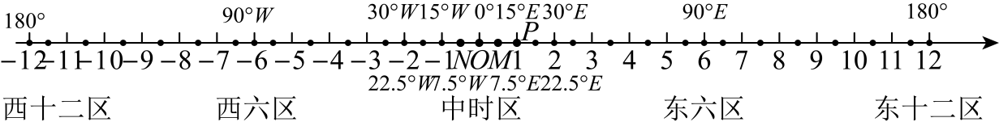
其中7.5°E表示东经7.5°，对应点M；7.5°W表示西经7.5°，对应点N；
15°E表示东经15°，对应点P；数字1表示东一区（从东经7.5°到东经22.5°之间的区域）；0°对应点O．
法国巴黎和中国北京分别采用东经15°（东一区）和东经120°（东八区）的时间，因此北京时间比巴黎时间要早7个小时．例如，巴黎时间8月4日19：00，就是北京时间8月5日凌晨2：00．
【问题的解决与实践】
(1)A，B，C三地分别采用经度是东经15°，东经120°和西经120°的时间，将三地用背景材料中数轴上的数简明地表示，分别是____________；
(2)下一届奥运会将于2028年在美国洛杉矶举行，洛杉矶采用西八区的时间．
①若北京时间是2024年10月10日13：00，洛杉矶时间是____________；
②若2028年洛杉矶奥运会的某一项游泳比赛于当地时间7月20日19：00进行，请你推算此时的北京时间．
【答案】(1)1，8，−8
(2)①2024年10月9日21：00；②2028年7月21日11：00
【分析】本题属于跨学科题，主要考查了数轴的应用，将实际问题转化为数轴问题成为解题的关键．
（1）根据阅读材料和数轴知识即可解答；
（2）先确定法国巴黎和中国北京，所在的时区，然后结合数轴的正负即可解答．
【详解】（1）解：∵A，B，C三地分别采用经度是东经15°，东经120°和西经120°的时间，
∴A在东一区，B在东八区，C在西八区，
∴A，B，C三地数轴上表示的数分别为：1，8，−8．
故答案为：1，8，−8．
（2）解：∵洛杉矶和中国北京分别采用西八区和东八区的时间，
∴北京时间比巴黎时间要早16个小时，
∴①当北京时间是2024年10月10日13：00，洛杉矶时间是2024年10月9日21：00；
②当洛杉矶时间7月20日19：00，北京时间为：2028年7月21日11：00．
36．（24-25七年级上·广西柳州·期中）综合与实践
【知识再现】我们都知道，数轴上表示数a的点与原点的距离叫做数a的绝对值，记作a，因为原点表示的数是0，所以a=a−0，由此可知，7−−2表示7与−2之差的绝对值，实际上也可理解为数轴上分别表示7与−2的两点之间的距离，所以7−−2=9；
【问题初探】阅读以下材料，并回答问题：
如图，把一根长度为acm木棒MN放在一条数轴（单位长度为1cm）上，它的两端M,N分别落在点A,B处，将木棒在数轴上水平移动，当点M移动到B处时，点N与点D重合，此时点N对应的数为17，当点N移动到A处时，点M与点C重合，此时点M对应的数为5．
（1）由此可得，CD=____________cm，a的值为____________cm．
（2）图中点A所表示的数是____________，点B所表示的数是____________．
【拓展应用】
（3）借助上述方法解决下列问题：
一天，小华去问奶奶的年龄，奶奶说：“我若是你现在这么大，你还要35年才出生；你若是我现在这么大，我已经是109岁的老寿星了，哈哈”小华纳闷，奶奶到底是多少岁？
请你画出示意图，求出小华和奶奶现在的年龄，并说明解题思路．
【答案】（1）12，4；（2）9，13；（3）小华今年13岁，奶奶今年61岁，理由见解析
【分析】本题考查了数轴，熟练掌握数轴及绝对值的含义，并能将题中结论应用是解本题的关键，综合性较强，难度适中．
（1）根据数轴上两点间距离直接求解；
（2）根据数轴上两点的几何意义直接求解；
（3）奶奶与小华的年龄差不变，借助数轴，把奶奶与小华的年龄差看作木棒MN，再对应求值即可
【详解】解：（1）根据题意有，
5到点A的距离、点A到点B的距离、点B到17的距离相等，都等于木棒的长度a，
17−5=12cm，12÷3=4cm，
∴ CD=12cm，a的值为4cm；
故答案为：12，4；
（2）由（1）可知∶AC=AB=BD=4cm，
∵C所表示的数是5，
∴点A所表示的数是5+4=9，点B所表示的数是9+4=13，
故答案为：9，13；
（3）如图∶点A表示小华现在的年龄，点B表示奶奶现在的年龄，
借助数轴，把小华与奶奶的年龄差看作木棒MN，类似奶奶像小华那么大时看作当B点移动到A点时，此时点A所对应的数为−35．小华像奶奶那么大时看作当A点移动到B点时此时B点所对应的数为109．
∴可知奶奶比小华大109−−35÷3=48（岁）．
−35+48=13，13+48=61．
∴点A对应的数为13，点B对应的数为61．
答：小华今年13岁，奶奶现在的年龄为61岁．
37．（24-25七年级上·广东肇庆·期中）综合与实践
【主题】折纸．
【素材】已知在纸面上有一数轴（如图所示），折叠纸面．
【实践操作】
操作1：在纸面上有如图所示的一数轴，折叠纸面，若数轴上数1表示的点与数−1表示的点重合，则数轴上数−2表示的点与数2表示的点重合．
操作2：现打开纸面后，再次折叠．使数轴上数−4表示的点与数0表示的点重合．数轴上A,B两点折叠后重合，M、N两点折叠后重合．
【实践探索】
(1)在操作2中，数轴上数3表示的点与数_____表示的点重合；
(2)若点A到原点的距离是5个单位长度，求点B表示的数；
(3)若数轴上MN两点之间的距离为20且点M表示的数比点N表示的数大，现有一只电子蚂蚁从点N出发，沿数轴以每秒2个单位长度的速度向射线NM的方向运动，求当电子蚂蚁所在位置到点M的距离为4时，电子蚂蚁所用的时间为多少秒？
【答案】(1)−7
(2)−9或1
(3)8秒或12秒
【分析】本题主要考查的是数轴的认识，数轴上两点之间的距离，点的对称性．
（1）数轴上数−4表示的点与数0表示的点关于点−2对称，再找出数3表示的点关于点−2的对称点即可；
（2）点A到原点的距离是5个单位长度，则点A表示的数为5或−5，分两种情况讨论，即可得到B点表示的数；
（3）分电子蚂蚁所在位置位于点M的左侧与右侧两种情况，分别计算即可．
【详解】（1）解：∵数轴上数−4表示的点与数0表示的点重合，
∴折痕处的点表示的数为：−4+02=−2，
3−−2=5，−2−5=−7，
∴数轴上数3表示的点与数−7表示的点重合；
故答案为：−7；
（2）解：∵点A到原点的距离是5个单位长度，
∴点A表示的数为5或−5，
点A表示的数为5时，
5−−2=7，−2−7=−9，
点A表示的数为−5时，
−2−−5=3，−2+3=1，
∴点B表示的数为：−9或1；
（3）解：当电子蚂蚁所在位置位于点M的左侧时，
电子蚂蚁所用的时间为20−42=8s，
当电子蚂蚁所在位置位于点M的右侧时，
电子蚂蚁所用的时间为20+42=12s，
即电子蚂蚁所用的时间为8秒或12秒．
38．（24-25七年级上·江苏南通·期末）综合与实践：
七年级某学习小组围绕“设计学校田径运动会比赛场地”开展主题学习活动．
素材：
如图1是学校操场实物图，图2是操场部分跑道示意图，操场跑道由两个平行的直道和两个半径相等的弯道（弯道是半圆形）组成，第一跑道（最内道）的总长度为400m．400m标准跑道一般设置8条跑道，300m跑道设置6条跑道，直道长均为84.5m，每道宽1.22m．在一个标准的400m跑道内，100m，200m，400m，800m等比赛跑道的起点不同，终点相同．（注：π取3，跑道分界线的宽度忽略不计）
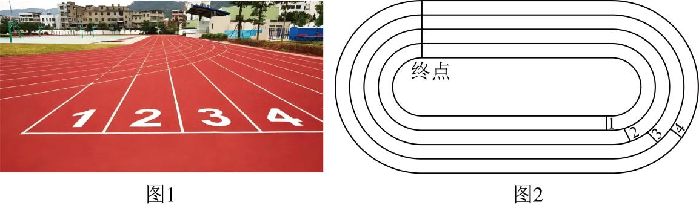
任务：
(1)海安某校操场是400m跑道．
①求第一跑道弯道的半径；
②小明、小勇参加学校运动会200m比赛，小明在第一跑道，小勇在第二跑道，小明的速度是5.4m/s，小勇的速度是4.8m/s，他们同时跑向同一终点，问小明几秒能追上小勇？
(2)小丽、小红参加学校运动会200m比赛，若小丽在第三跑道，小红在最外圈跑道，并且最外圈跑道的起跑点比第三跑道的起跑点前伸10.98m，求操场最外圈跑道的周长．
【答案】(1)①38.5m；②小明6.1秒能追上小勇
(2)第四跑道周长为436.6m
【分析】本题考查有理数四则运算的实际应用，正确理解题意是解题的关键：
（1）①设第一跑道弯道半径为 R ，根据第一跑道全长400m由“两段直道+两个半圆”组成，直道总长为169m，即可得到弯道的总长，由圆的周长公式即可求出半径；②两条相邻跑道半径相差1.22m，则第二跑道比第一跑道多出的长度为3.66m，再利用路程÷速度差=时间列式计算即可；
（2）根据题意，求出第四跑道与第三跑道整圈（400m）相差 21.96m；再利用两条相邻跑道半径相差1.22m，由第一跑道整圈400m，求出第三跑道整圈的长度，最后加上第四跑道与第三跑道整圈的长度差 21.96m即可得出结果．
【详解】（1）解：①设第一跑道弯道半径为 R ，
第一跑道全长400m由“两段直道+两个半圆”组成，直道总长为2×84.5=169m，弯道总长为 2×3.14Rm，
则169+2×3.14×R=400，
解得：R=38.5m；
②小明在第一跑道，小勇在第二跑道，均跑200m 比赛，小明的速度是5.4m/s，小勇的速度是4.8m/s，
两条相邻跑道半径相差1.22m，则第二跑道比第一跑道多出的长度为3.14×1.22=3.66m，
为保证二人比赛距离同为200m ，第二跑道的起点要比第一跑道“向前”3.66m，这相当于小勇一开始比小明“领先”3.66m，
小明比小勇每秒快5.4−4.8=0.6m/s，
3.66÷0.6=6.1s
答：小明6.1秒能追上小勇；
（2）解：根据题意：小红在第四跑道，
两条相邻跑道半径相差1.22m，且第四跑道的起跑点比第三跑道的起跑点前伸10.98m，
对应第四跑道的半圆跑道与第三跑道的半圆跑道相差10.98m，则两条跑道整圈（400m）相差 10.98×2=21.96m，
第三跑道的全长可视为第一跑道的400m加上向外两道的长度差：每增加一条道（宽 1.22m），整圈弯道长度增量为2×3.14×1.22=7.32m；
从第一跑道到第三跑道相差 2×7.32=14.64m，
故第三跑道周长为400+16.64=414.64m，
因为第四跑道与第三跑道整圈相差 21.96m，
所以第四跑道周长为416.64+21.96=436.6m．
39．（24-25七年级上·安徽蚌埠·阶段练习）【阅读理解】
一种中国自古以来就一直使用的纪年方法：干支纪年，以下是关于干支纪年的素材，请阅读后解决问题．
素材①：干支是天干和地支的总称，十天干依次为：甲、乙、丙、丁、戊、己、庚、辛、壬、癸；十二地支依次为：子、丑、寅、卯、辰、巳、午、未、申、酉、戌、亥．干支纪年法的组合方式是天干在前，地支在后，以十天干和十二地支循环配合，即：甲子、乙丑、丙寅、丁卯、戊辰、己巳、庚午、辛未、壬申、癸酉、甲戌、乙亥、丙子、丁丑、……、辛酉、壬戌、癸亥、甲子、乙丑、……，每个组合代表一年，60年为一个循环，也称60年一甲子．
素材②：把天干、地支按顺序排列，且给它们编上序号．
序号 | 1 | 2 | 3 | 4 | 5 | 6 | 7 | 8 | 9 | 10 | 11 | 12 |
天干 | 甲 | 乙 | 丙 | 丁 | 戊 | 己 | 庚 | 辛 | 壬 | 癸 | ||
地支 | 子 | 丑 | 寅 | 卯 | 辰 | 巳 | 午 | 未 | 申 | 酉 | 戌 | 亥 |
天干的计算方法是：年份减3，除以10后，所得的余数；
地支的计算方法是：年份减3，除以12后，所得的余数．
以2024年为例，天干为：(2024−3)÷10=202⋯1；地支为：(2024−3)÷12=168⋯5；
对照天干地支表得出，2024年为农历甲辰年．
素材③：十二地支又与十二生肖依次顺位相对应为：子鼠、丑牛、寅虎、卯兔、辰龙、巳蛇、午马、未羊、申猴、酉鸡、戌狗、亥猪．
【解决问题】
(1)获得诺贝尔医学奖的中国科学家屠呦呦生于公历1930年，用干支纪年法她生于农历______年，她的属相是______年；
(2)今年是伟大祖国75周年华诞，75年前的1949年用干支纪年法是农历______年；
(3)六十甲子中有农历丁卯、丁丑、丁亥、丁酉、……，会不会出现“丁午”年？请说明理由．
【答案】(1)庚午，马
(2)己丑
(3)不会，理由见解析
【分析】此题考查了有理数的四则混合运算，解题的关键是掌握天干地支纪年法的计算方法．
（1）根据干支纪年法的计算方法求解即可；
（2）根据干支纪年法的计算方法求解即可；
（3）由天干中的单数个的字对应的字是地支的单数个字可作出判断．
【详解】（1）解：∵屠呦呦生于公历1930年，
∴天干为：1930−3÷10=192⋅⋅⋅7；
地支为：1930−3÷12=160⋅⋅⋅7；
∴用干支纪年法她生于农历庚午年，她的属相是马年；
（2）解：∵75年前是1949年，
∴天干为：1949−3÷10=194⋅⋅⋅6；
地支为：1949−3÷12=162⋅⋅⋅2；
∴用干支纪年法是农历己丑年；
（3）解：∵与天干中的单数个的字对应的字是地支的单数个字，而丁是第4个，是双数，
与之相对的字只能是地支中的第双数个字，
∵午”的排名是单数，
∴不会出现“丁午”年．
40．（23-24七年级上·全国·课后作业）综合与实践活动
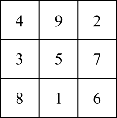
（1）横行、竖列、对角线上的三个数之和分别是多少？你还能发现哪些相等的关系？
（2）如果把和相等的每一组数分别连线，这些线段会构成一个怎样的图形？描述你得到的图形有什么特点？
（3）你能改变上述幻方中数字的位置，使它们仍然满足你发现的那些相等关系吗？
（4）在你构造的幻方中，最核心的位置是什么？有没有“成对”的数？
归纳总结：三阶幻方的性质：每一________、每一________和________的三个数的和都相等．
【实践应用】
“九宫图”源于我国古代夏禹时期的“洛书”（图1所示），是世界上最早的矩阵，又称“幻方”，用今天的数学符号翻译出来，“洛书”就是一个三阶“幻方”（图2所示）．
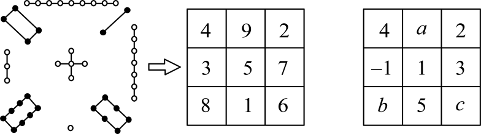
在新“幻方”（图3所示）中，将−3，−2，−1，0，1，2，3，4，5分别填入九个空格内，使每行、每列、每条对角线上的三个数之和相等，现在a，b，c分别表示其中的一个数，则b−a+c的值为________．
【答案】归纳总结：横行，竖列，对角线上；实践应用：1
【分析】（1）分别计算横行、竖列、对角线上的三个数的和，即可出结论；
（2）观察图形，即可得出结论；
（3）根据三阶幻方的特点，改变数字的位置，即可验证其相等关系；
（4）根据图中数据进行分析即可；
（实践应用）根据题意得出最核心的位置是1，成对的数有“5和−3”，“4和−2”，“3和−1”，“2和0”，即可得出a、b、c的值，即可求解；
【详解】解：（1）横行：4+9+2=15，3+5+7=15，8+1+6=15，
竖列：4+3+8=15，9+5+1=15，7+2+6=15，
对角线：4+5+6=15，2+5+8=15，
相等关系为：每一横行、每一竖列和对角线上的三个数的和都相等；
（2）如果把和相等的每一组数分别连线，这些线段会构成一个“米”字形，
该图形是中心对称图形，也是轴对称图形；
（3）如图所示：
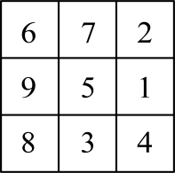
（4）最核心的位置是5，有成对的数，“9和1”，“8和2”，“7和3”，“6和4”，其中“9和1”，“7和3”，只能在核心位置的“上下”或“左右”出现；
归纳总结：三阶幻方的性质：每一横行、每一竖列和对角线的三个数的和都相等．
故答案为：横行、竖列、对角线上；
实践应用：∵使每行、每列、每条对角线上的三个数之和相等，
∴最核心的位置是1，成对的数有“5和−3”，“4和−2”，“3和−1”，“2和0”，
∴a=−3,b=0,c=−2，
∴b−a+c=0−−3+−2=1，
故答案为：1．
【点睛】本题主要考查了有理数的混合运算，解题的关键是仔细观察，正确计算，总结出题目所给“三阶幻方”的特征．